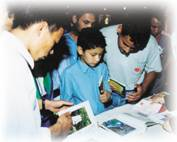

| Reportages spéciaux |
|
|

Maître touche le coeur des gens dans le pays de Bouddha, le Népal. |
Il faisait très beau en ce 1er mai et les rayons du soleil ont accueilli Maître à Katmandu au Népal. Quelques heures avant la conférence, des bus bondés et une foule de gens se sont rassemblés devant le Birendra International Convention Center. De nombreuses personnes à vélo ou en voiture ralentissaient jusqu'à s'arrêter pour contempler les beaux portraits de Maître sur les affiches.
Environ trente minutes avant l'ouverture des portes du Convention Center aux nombreux chercheurs de la Vérité, impatients, qui attendaient dehors, des nuages noirs menaçants sont apparus au-dessus de nos têtes, puis une pluie torrentielle s'est mise à tomber. Des éclairs ont jailli puis le tonnerre a grondé. La température a chuté de 10 degrés Celsius, rafraîchissant l'atmosphère. Le pouvoir de bénédiction de Maître était évident !
Cinq grandes salles du Convention Center avaient été préparées pour pouvoir accueillir les milliers de personnes attendues à la conférence au Népal. De grands écrans de télévision et des haut-parleurs avaient été installés au cas où des invités devraient rester dehors. La foule immense a rempli toutes les salles, elles étaient pleines à craquer. Même à la fin de la conférence, il y avait encore au moins un millier de personnes qui attendaient à l'extérieur, espérant voir Maître !
Quand Maître est arrivée, les gens se sont levés et ont applaudi, et l'atmosphère a été envahie d'une vive émotion. Maître, vêtue d'un sari traditionnel népalais, simple mais élégant couleur ivoire avec des manches amples, était ravissante. L'estrade était décorée de fleurs et de grands arbres verts tandis que le divan de Maître était couvert d'un tissu népalais aux nombreux motifs. Pour débuter le programme, des enfants népalais en costumes traditionnels et des adultes ont fait des offrandes de fleurs.
S'adressant à un public nombreux, Maître a dit qu'Elle ressentait énormément l'amour, ainsi que la pureté des Népalais. (Note : Bouddha est né à Lumbini au sud-ouest du Népal, il y a environ 2500 ans.) Et c'était un honneur pour Elle d'être dans ce magnifique pays. Elle était très surprise par la chaleur qu'il faisait à Kathmandou. Elle a expliqué qu'Elle avait été une fois dans l'Himalaya en Inde et pensait que le climat serait semblable ici, au Népal. Mais au contraire, Il faisait chaud comme le coeur des gens.
Pendant Sa conférence, Maître a rappelé à l'auditoire que nous sommes déjà amour, chaleur et sagesse, mais certains d'entre nous l'ont oublié. Les personnes qui se souviennent de leur propre Moi, de leur Nature de Dieu, ou Nature de Bouddha sont appelées "êtres illuminés". Ceux qui ne se souviennent pas de leur Nature originelle nous les appelons "Bouddhas pas encore illuminés", mais Maître a souligné que tous les deux étaient Bouddhas. Lorsque nous ignorons que nous sommes Dieu, nous sentons que notre vie n'est pas accomplie, et nous sommes ni heureux, ni satisfaits. Maître a dit que toutes les souffrances et les malheurs sur cette planète ne sont pas causés par les guerres, ni par la pauvreté ou les conditions de vie, mais par un manque de sagesse, un manque de connaissance, que nous sommes plus qu'un corps humain.
Par exemple, beaucoup de rois, de dirigeants, de personnes riches et de personnes connues ne sont pas heureuses et veulent toujours avoir une meilleure position, plus de pouvoir, plus d'argent, plus de tout, et ils ne sont toujours pas heureux. Mais le Bouddha, même en tant que futur roi, a tout abandonné, n'avait rien avec Lui et était heureux ; parce que le Bouddha se rappelait qui Il était vraiment alors que les autres ne s'en souviennent pas. Le bouddha a aussi dit : " Je me suis déjà rappelé que Je suis un Bouddha, et vous serez les futurs Bouddhas. " Dans la tradition Bouddhiste Zen, la différence entre l'illumination et l'ignorance n'est pas plus large qu'un cheveu. Maître a demandé : " Comment pouvons-nous traverser cette distance, même si c'est si subtil ? Comment le pouvons-nous ? Le pouvons-nous ? ",Et a répondu " La réponse est " Oui ", parce que la Lumière qui est à l'intérieur de nous ne meurt jamais. La lumière de Bouddha qui a été communiquée au cercle de Ses disciples, la lumière de Krishna et la lumière de Shiva ne s'est jamais éteinte. Elle a été continuellement transmise d'un être à un autre, d'un pays à un autre, et continue de briller. Si nous trouvons cette Lumière, elle est transmise à notre bougie éteinte et ainsi notre bougie sera allumée immédiatement. La différence entre l'illumination et la non-illumination est là où nous portons notre attention. Si nous faisons attention au corps, à l'environnement physique et à tout ce qui est dans ce monde matériel, alors nous sommes des êtres matériels qui vivent dans un monde matériel. Si nous faisons attention à la Nature intérieure de notre Moi et à notre Nature de Dieu, qui est toujours à l'intérieur de nous, qui est innée et ne meurt jamais, alors nous devenons un Maître illuminé. C'est la seule différence, et il est très facile de traverser cette différence. "
" Lorsque nous tournons notre attention vers l'intérieur, notre Soi originel, nous verrons la Lumière, le royaume de Dieu, le Ciel, et tout ce qui pourra nous élever, nous rendre plus heureux et sage. Si nous nous tournons intérieurement pour entendre notre propre Nature, nous entendrons les vrais enseignements directement de Dieu, du ciel, et des maîtres du passé, du présent et du futur. Ces enseignements ne passent pas par les mots, ils sont directs, non contaminés, éternels. Ils nous font nous souvenir que nous sommes Dieu et que nous venons de Dieu. Cela peut se passer immédiatement. Nous avons simplement à nous tourner vers l'intérieur. "
" Seule l'expérience Divine présente, seule l'illumination présente, la réalisation de notre propre Vrai Moi peut faire de nous des personnes satisfaites, des êtres plus heureux et plus sages. Après que Bouddha ait atteint l'Illumination, Il était encore un moine. Il n'avait pas besoin de devenir un roi ou de retourner à sa vie d'origine. Bien sûr, Seigneur Bouddha pouvait être aussi un roi mais Il serait toujours une personne illuminée. Après avoir été illuminé, peu importe ce que vous faites, vous êtes illuminés. Shri Rama était si illuminé que peu lui importait d'être un roi ou en exil à des milliers de kilomètres de chez lui, il était heureux. Plus tard les gens lui ont demandé de redevenir roi, il a répondu " D'accord ! "
 C'est ça une personne illuminée. Il n'y a aucun attachement d'aucune sorte que ce soit pour la pauvreté, le renoncement ou les royaumes. L'être illuminé fera tout ce que la situation exige, tout ce qui est bénéfique aux êtres sensibles, parce qu'à l'intérieur d'eux il y a le bonheur, la paix et l'amour. Aucune assistance matérielle ou immatérielle ne leur est nécessaire pour être satisfaits. Pour les êtres illuminés, tout ce qu'ils font est tout pour le bien des autres ; qu'ils agissent ou qu'ils n'agissent pas ; qu'ils prennent quelque chose ou qu'ils ne prennent rien. Même lorsqu'ils mangent de la nourriture ou boivent du lait, tout est pour le bienfait des autres êtres. Pour être satisfait, être en paix, être heureux, aimant et réellement heureux à l'intérieur, nous devons nous rappeler qu'à l'intérieur nous sommes vraiment comme Seigneur Bouddha et d'autres si nombreux grands Maîtres.
Un des grands Maîtres en Inde était vraiment pauvre. Quelqu'un, peut-être une princesse, lui a donné un diamant, une pierre précieuse. Cela valait toute une fortune mais il ne l'a même pas touché. Elle l'a mis sur le toit et quand elle est revenue, il était encore là. Pour un être illuminé, être pauvre n'est rien. Il pouvait aussi être riche s'il le voulait. Il n'était pas obligé de rester dans la pauvreté, mais pour lui, être riche ou pauvre, c'était pareil. Les Maîtres n'ont pas plus d'attachement à ce qu'ils ont ou ce qu'ils n'ont pas car ils savent déjà que tout dans ce monde n'est pas de leur Vraie Nature. Ils connaissent déjà le royaume de Dieu. Pour atteindre ce genre de contentement et de paix, nous devrions aussi chercher à l'intérieur et trouver notre vraie grandeur.
C'est facile de se souvenir de notre Moi - plus facile que de respirer, de manger ou de parler. Les divertissements ne comblent pas nos besoins, ne satisfont pas nos désirs. Nous avons besoin de la chose correcte. L'illumination est la chose correcte, pas besoin d'en parler ou d'en faire la publicité. Une publicité dirait : " Coca Cola, c'est super. " Une autre dirait que les pommes sont sucrées. Mais nous ne ressentons rien de la publicité elle-même. Nous ne voyons pas de Lumière. Nous ne sentons pas la bénédiction de Dieu lorsque c'est seulement de la publicité. "
Maître a ajouté que ce n'est pas comme si Elle allait "donner aux gens" quelque chose, car nous avons toujours eu notre vraie Nature. C'est seulement que nous avons oublié où elle est. Elle nous montrera comment devenir illuminé, et alors nous aurons à nouveau notre vraie Nature et pour toujours.
A la fin de la conférence, Maître a marché dans la foule pour saluer autant de personnes que possible. Elle a Parlé au microphone à ceux qui étaient dehors. Elle a dit que bien qu'ils n'aient pas eu de siège dans la salle de conférence, ils ont eu un siège dans Son coeur.
Après la conférence plus de 600 personnes ont été initiées. Et depuis la conférence, de plus en plus de gens appellent chaque jour pour l'initiation ! Les "vagues" de la tournée de conférence Océan d'amour continuent à déferler tandis que la présence bienveillante de Maître réveille les coeurs et les âmes des chercheurs de Vérité au Népal, même après qu'Elle ait quitté physiquement leur pays.
Par une nouvelle soeur initiée Punam Ghimire, Népal
(A l'origine en anglais)
Mademoiselle Punam Ghimire, Miss Népal 1996-97. |
Cela a été une merveilleuse expérience ! Tout était si fantastique et mérite notre reconnaissance : les frères et soeurs de l'Association Internationale de Maître Ching Hai, leur unité, simplicité, sincérité, et politesse. Maître Ching Hai Elle-même et Sa conférence sur la sagesse. A mon avis, non seulement moi-même mais tous ceux qui ont assisté à la conférence de Maître Suprême Ching Hai et à l'initiation ont ressenti la même chose.
Maître Suprême Ching Hai,
Mes salutations. Merci pour Vos paroles justes dans la région du Mont Everest. J'espère que nous pourrons un de ces jours, accueillir le Maître Suprême Ching Hai dans la région de l'Himalaya du Népal, et je prie pour que Maître Suprême Ching Hai mette pied à terre à nouveau sur la terre de Bouddha.
J'étais une des personnes présentes au Centre International de Conférences de Birendra à Katmandou, la capitale du Népal, qui a écouté avec enthousiasme et attention les mots de la vénérable Maître Ching Hai. Son discours était très inspiré et avait comme but la paix dans le monde et le bien-être de l'humanité. J'espère sincèrement que d'autres personnes auront l'opportunité d'écouter Ses mots pleins de sagesse.
Sincèrement votre,
Surya Prasad Koirala
Editeur des publications Himshikhar
|
|